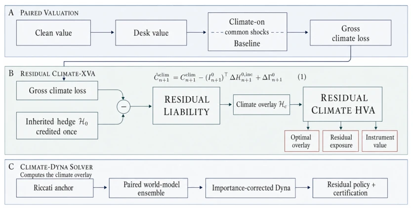
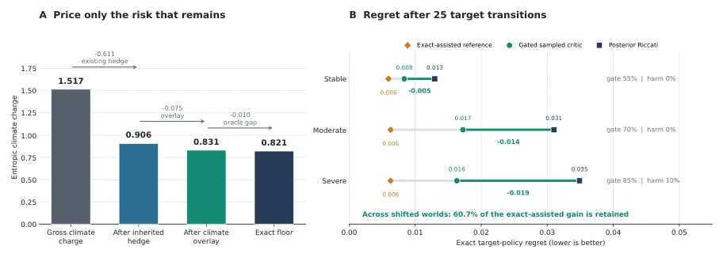

This paper integrates climate risk pricing into a reinforcement learning framework, constituting a rigorous attempt within the financial quantitative domain. The authors avoided elaborate end-to-end large models, instead employing a residual Hedging strategy that first accounts for the legacy hedge's contribution before allowing RL to compensate for the remainder. The name Climate-Dyna is prominent, essentially adapting the Dyna architecture to financial time series. The highlight lies in using Riccati as an anchor, avoiding catastrophic forgetting in RL from scratch, given that financial data is severely limited, making pure model-free learning fundamentally unreliable. However, there are significant limitations: experiments rely entirely on semi-synthetic data. While the EU ETS model calibrated public data, the climate off branch is constructed, casting doubt on causality. Furthermore, this approach remains distant from real trading desks, as physical risks and XCE term sheets have not been fully executed. Nevertheless, leveraging the sample efficiency advantage of model-based RL for long-cycle climate transition is indeed a superior strategy compared to pure Monte Carlo, at least saving computational resources.
Trading desks facing climate risks find calculating a stressed value insufficient; they need to know how much existing hedges actually cover. Existing literature [1, 2, 3] mostly focuses on climate VaR or network stress testing, [4, 5] focuses on derivative valuation adjustments, but none treat the residual exposure after combining specific inherited hedges as the core pricing object. Climate transition disturbs carbon prices, default probabilities, sector values, etc. [1, 2, 3]; existing adjustments price important channels but do not treat residual exposure as the primary valuation object. Pure model-free learning is unreliable under long-cycle data scarcity, while fixed closed models are too rigid. Both need to be combined. Existing climate adjustments, while pricing important channels, do not treat the residual exposure after combining specific inherited hedges as the core pricing object, leading to insufficient valuation precision. Climate transition disturbs carbon prices, default probabilities, sector values, etc. [1, 2, 3]; existing adjustments price important channels but do not treat residual exposure as the primary valuation object. Pure model-free learning is unreliable under long-cycle data scarcity, while fixed closed models are too rigid. Both need to be combined.
The overall process is divided into three steps: first calculate residual liability, then set Riccati anchor, finally use Climate-Dyna to learn nonlinear correction. 1. Residual Framework: Inherited hedge is accounted for first, only optimizing the remaining residual liability. Formula (1) deducts the inherited hedge's P&L and costs, leaving the rest to the overlay. 2. Riccati Anchor: Assuming linear Gaussian, calculate the exact solution (17) using finite-horizon Riccati equations as the controller baseline. This solves the data scarcity problem, providing a reasonable prior. 3. Climate-Dyna: Core innovation. Use paired world model to generate paired climate on/off paths (21); during Dyna planning, prioritize sampling paths with high residual loss (23). The policy network only learns the Riccati residual correction (25), not from scratch. 4. Deployment Gating: Independent rollout decides if updates take effect, preventing model hallucination from causing drawdowns. In data flow, first fit observed transitions, then use synthetic paths to cover long-cycle regimes, finally use importance sampling to correct distribution shift.

Figure 1: End-to-end framework: paired valuation isolates gross climate loss; inherited-hedge credit and overlay optimization yield residual climate HVA and instrument values; Riccati-anchored Climate-Dyna computes and independently certifies the overlay.
The dataset is a semi-synthetic EU ETS model from 2012-2025, calibrated with EEX auctions and public data. Baselines include Replay, Model-based scratch, Posterior Riccati, FQI. Metrics are entropic regret and HVA reduction magnitude. Results: Residual Dyna uses 1/4 trajectory count, regret reduced by 93%. Inherited hedge reduced mean climate charge from 1.517 to 0.906, overlay further reduced to 0.831 (exact floor 0.821). Ablation: Riccati residual parameterization contributes the most. After 25 target conversions, gated critic retained 60.7% of exact-assisted gain. Findings: EUA is the only valuable instrument, utilities are useless.

Figure 2: Financial and control residuals. (A) The inherited hedge is credited before the climate overlay is valued. (B) Posterior Riccati, the gated sampled critic, and the exact-assisted reference are compared after 25 target transitions; movement to the left means lower regret. The panels use different numerical scales.